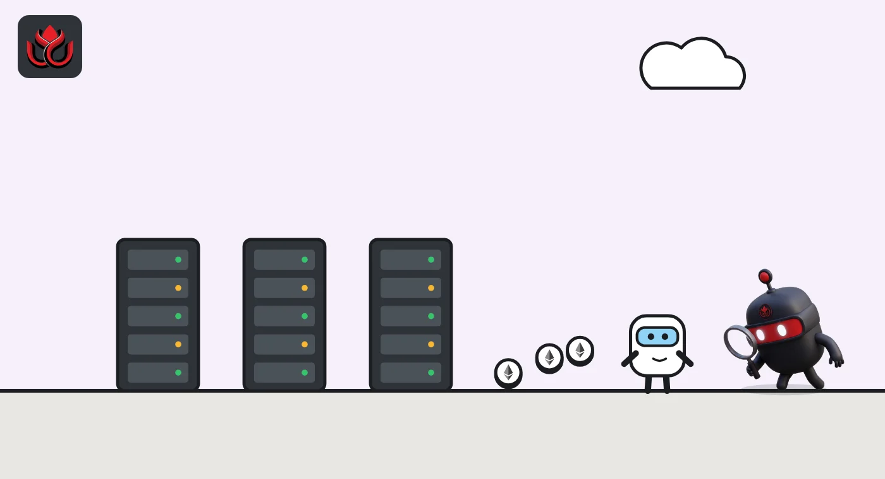
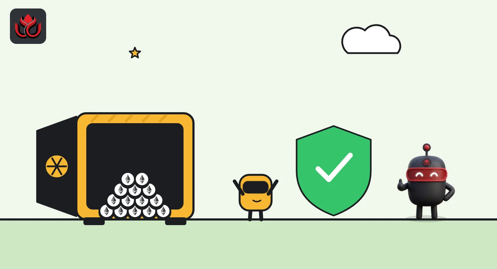

What is Ethereum? How the global computer works, what ETH does and the risks
Ethereum is a public blockchain that runs programs called smart contracts, and ether (ETH) is the coin that pays for using it and secures it through staking. It launched in July 2015, switched from mining to proof of stake on September 15, 2022, and ETH traded near $2,267 as of November 2, 2026.
Key points
- Ethereum is a shared computer run by many independent nodes, where anyone can deploy or use programs called smart contracts.
- ETH pays gas fees, part of which is burned, and is the stake validators lock up. Ethereum has used proof of stake since The Merge on September 15, 2022, and a solo validator needs 32 ETH.
- ETH has no supply cap: CoinGecko listed about 122.18 million ETH and a market cap near $277 billion on November 2, 2026. The main risks are price swings, app bugs, staking penalties and third-party custody.
What DeepSea's data shows
Ether is the asset leveraged traders bet on most. On November 2, DeepSea's long/short page showed $1.12 billion of ETH longs across 105 tracked wallets against $74.86 million of shorts, a 94% long share and the biggest long book of the 150 assets it follows. The average leverage on those positions was 15.4 times, per DeepSea's ETH page.
Much of the ether held for customers sits with exchanges. DeepSea's Binance page counted $55.06 billion of Binance's tracked holdings on Ethereum, the largest share by chain, and $97.48 million of ETH leaving the exchange over seven days.
Data: DeepSea (desea.io), checked November 2, 2026, 12:58 p.m. ET.
What is Ethereum?
Ethereum is a public blockchain: a shared record of balances and programs that many independent computers keep in sync. ethereum.org, the community site funded by the Ethereum Foundation, describes it as a decentralized blockchain network and software platform powered by ether (ETH).
Bitcoin was built mainly to move one currency. Ethereum was built so that anyone could also publish programs, called smart contracts, that run exactly as written and stay open to anyone with an internet connection. Lending apps, exchanges, stablecoins and NFT collections are all built from these contracts.
The project's whitepaper came out in 2013 and the network went live in July 2015, according to ethereum.org. It credits Vitalik Buterin and a small group of co-founders.
How does Ethereum work?
Think of Ethereum as one global computer that nobody owns. The technical introduction on ethereum.org calls it the Ethereum Virtual Machine (EVM): a single shared state, including every account balance and every contract's data, that all nodes store and agree on.
To change that state, you send a transaction. It might move ETH, deploy a new contract or call an existing one. Transactions are grouped into blocks, which usually hold dozens to hundreds of them, and each block points to the one before it. That chain of blocks is the history everyone agrees on.
Every transaction carries a fee in ETH. The network burns part of that fee, removing it from supply for good, and pays the rest to the validator that adds the transaction to a block. The more computing work a transaction needs, the more it costs.
The machines that keep the record are called nodes. Since The Merge, ethereum.org says a node needs two pieces of software: an execution client (such as Geth, Nethermind, Besu, Erigon or Reth) that runs transactions, and a consensus client (such as Lighthouse, Prysm, Teku, Nimbus or Lodestar) that follows proof of stake. Having several independent clients means one software bug is less likely to take down the whole network.

What is ETH used for?
According to ethereum.org's guide to ether, ETH has three main jobs:
- Paying gas. Every transfer, swap or contract call costs a fee in ETH, set by how much computing it needs and how busy the network is.
- Staking. Validators lock ETH as a security deposit. They earn new ETH for honest work and lose part of their deposit for cheating.
- Collateral and money inside apps. ETH, often in a wrapped token form called WETH, is posted as collateral on lending apps such as Aave.
Many other tokens, including dollar stablecoins, live on Ethereum. Moving them still costs gas paid in ETH, which is why ETH demand is tied to how much the network is used. For the lending side, see our guide to how Aave works.
How does Ethereum staking work?
Ethereum switched from mining to proof of stake in The Merge on September 15, 2022. Proof of stake had been running in parallel on a separate chain, the Beacon Chain, since December 1, 2020, according to ethereum.org. Instead of burning electricity to win blocks, validators put ETH at risk. ethereum.org's overview says the change cut the network's energy use by about 99%.
The ethereum.org staking page lists several ways to take part. Home staking means running your own validator, which takes 32 ETH and your own hardware. Bonded node operation lets someone run validators with about 1.5 to 4 ETH, topped up with pooled funds. Delegated staking hands the node work to a provider. Liquid staking pools and exchanges accept any amount but add a third party you must trust.
Validators that go offline miss rewards and lose small amounts. Validators that provably cheat, for example by signing two conflicting blocks, are slashed: part of their stake is destroyed and they are forced out. Some people also restake their ETH to secure other services, which adds new slashing rules; our restaking explainer covers that.

How much ETH is there?
Unlike bitcoin, ETH has no hard cap. New ETH is issued to validators at a rate set by the protocol, while part of every fee is burned. ethereum.org notes that heavy network use can burn more ETH than is issued, so supply can shrink.
CoinGecko listed these figures as of November 2, 2026, around 12:45 p.m. ET:
- Price: about $2,266.88.
- Circulating supply: about 122.18 million ETH, with no maximum supply.
- Market cap: about $277.1 billion, ranked second among all crypto assets.
- 24-hour trading volume: about $10.1 billion.
- All-time high: $4,946.05, so ETH was about 54% below its peak.
Ethereum vs. Bitcoin market cap, November 2, 2026
US$ billion
Source: CoinGecko, Ethereum and CoinGecko, Bitcoin, as of November 2, 2026, about 12:45 p.m. ET
Who runs Ethereum and how does it change?
No single company runs Ethereum. ethereum.org describes it as operated, governed and owned by a global community of developers, node operators, ETH holders and users. Several separate teams write the client software. The Ethereum Foundation, a nonprofit first funded by the ETH crowdsale, supports the network and pays for ethereum.org.
Rule changes ship as named hard forks that client teams agree on in public developer calls and then release in their software. Each fork is tried on test networks first. Our Ethereum roadmap explainer covers recent upgrades and why the next one, Glamsterdam, still had no mainnet date as of November 2, 2026.
Much day-to-day activity has moved to layer 2 networks, separate chains that run transactions cheaply and settle back to Ethereum. They lean on Ethereum for security but often keep extra controls of their own.
What are the risks of Ethereum?
Price risk. ETH swings hard. At about $2,267 on CoinGecko on November 2, 2026, it sat roughly 54% below its all-time high.
Smart contract risk. Ethereum runs code exactly as written, bugs included. A flaw in an app can drain the funds in it, and the base network will not reverse that.
Staking risk. ethereum.org lists penalties for going offline, slashing for misbehavior, and extra smart contract, custody and counterparty risk when you stake through a pool, provider or exchange.
User error and scams. Transactions are final. Sending to a wrong address or signing a malicious approval usually cannot be undone.
Upgrade and supply uncertainty. Rules change through hard forks, and supply depends on the balance of issuance and burning, so neither is fixed the way bitcoin's schedule is.
LC Insight analysis
This section is our reading of the facts above, not a statement of fact.
- We think ETH's value is best read as a bet on network use: fees, staking demand and collateral all depend on people actually using Ethereum and the layer 2 networks that settle on it.
- The real risk for most users is rarely the base chain. It sits in the apps, bridges, staking providers and wallets on top, where bugs, custody failures and bad signatures cause most losses.
- Watch the upgrade calendar. A slipped fork does not break mainnet, but it delays the fee and scaling changes much of the ETH story depends on.
What's next
- A new mainnet date for the Glamsterdam upgrade
- Share of ETH staked and how concentrated it is among large providers
- Whether ETH supply grows or shrinks as fee burning changes with activity
Frequently asked questions
Is Ethereum the same as ether?
No. Ethereum is the network. Ether (ETH) is its native coin, used to pay fees and to stake.
Does Ethereum still use mining?
No. Ethereum moved to proof of stake in The Merge on September 15, 2022, and validators now stake ETH instead of mining.
How much ETH do you need to stake?
Running your own validator takes 32 ETH, according to ethereum.org. Pools and exchanges accept smaller amounts but add a third party you must trust.
Does ETH have a maximum supply?
No. ETH has no hard cap. New ETH goes to validators while part of every fee is burned, and CoinGecko listed about 122.18 million ETH as of November 2, 2026.
Who created Ethereum?
ethereum.org credits Vitalik Buterin and a small group of co-founders. The whitepaper came out in 2013 and the network launched in July 2015.
Disclaimer. This article is based on public information and the sources listed below as of the update time shown. It is for information only and is not investment, legal or tax advice. Figures may change as companies and authorities publish new data.